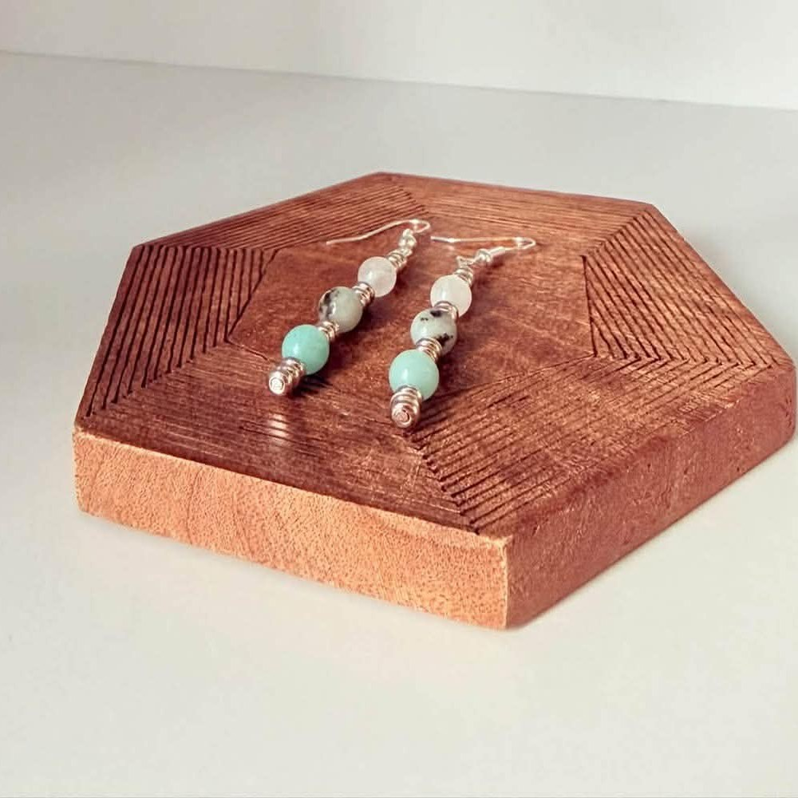
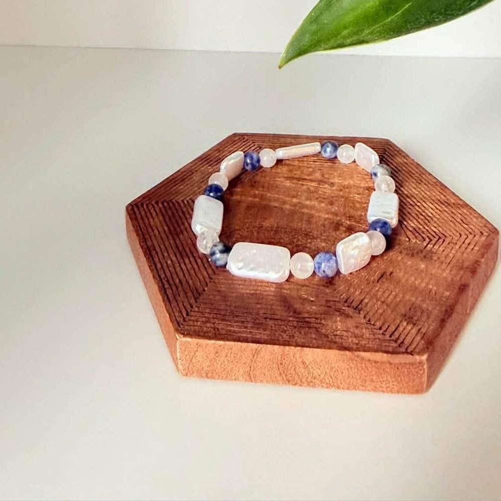

Medium Earrings
Amazonite · Sesame Jasper · White Jade
Three stones dropped on a silver-tone wire, with a small coiled detail set between each one. Light enough that you forget you have them on.
- Calm
- Grounding
- Harmony
- Balance
Made by hand in Orillia, Ontario
Crystal earrings and bracelets, strung a few at a time from natural stone — chosen bead by bead, knotted at the kitchen table, and carried to markets around Simcoe County.

The collection so far
Two pieces available right now, with more coming after every market. Because everything is made by hand, each one comes out a little different.

Amazonite · Sesame Jasper · White Jade
Three stones dropped on a silver-tone wire, with a small coiled detail set between each one. Light enough that you forget you have them on.
Blue Dot Jasper · White Jade
Smooth rounds set against flat rectangles so it catches the light as your hand moves. Stretch fit, no clasp to fuss with.
Bead by bead
Every stone is picked for how it looks next to the others — and for what it has long been said to carry.
Pale blue-green with a soft cloudiness running through it. The calm one.
Cream flecked with black. No two beads ever match. Steady and grounding.
Soft, nearly translucent. Long tied to harmony and to quieting things down.
Deep blue scattered through pale stone. For balance and a clear head.
Our story
Aesty Design started at a kitchen table in Orillia and has stayed about that size on purpose. Every piece is strung by hand, a few at a time, from stone chosen bead by bead rather than bought by the strand.
Nothing here is mass produced and nothing is rushed. If you have a colour, a length or a particular stone in mind, that is honestly the best way to work — tell us what you are after and we will put it together for you.
Start a custom pieceWhere to find us
We set up at markets around Orillia and Simcoe County through the season — the best place to see the stones in person.
Upcoming dates to be announced.
Between markets, pieces are listed and sold through Facebook Marketplace.
Find us on Facebook →Custom orders, sizing questions, or just want to see what is in the box this week — send a note.
Message on Instagram →